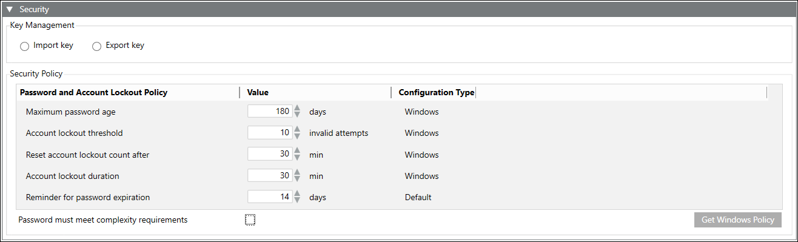
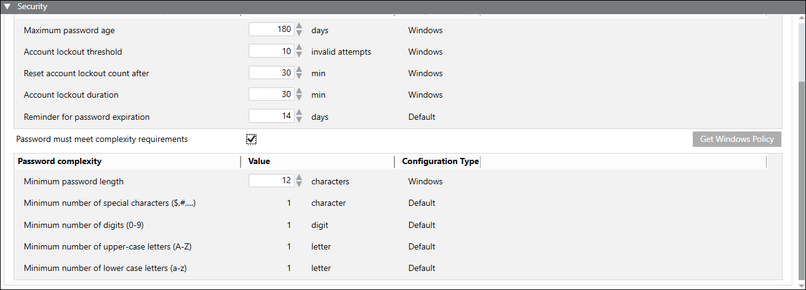
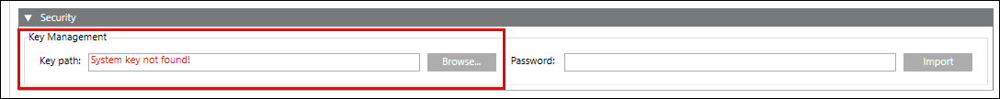

Security Expander
When you first start-up SMC, SMC automatically creates the system key (containing the key pair, that has the private and the public key) in the Windows Key store on the server. For working with multiple computers supporting various deployment types and securing the sensitive data, you might use the same system key (private key). You can do this using the Security expander for Server, Client, and FEP deployments.
For server, Client, and FEP deployments, the Security expander displays in SMC, when you select the Systems node in the SMC tree.

Security Expander on Server SMC
On the SMC server, the Security expander allows you to do the following:
- Export and import the Windows key file (containing the key pair, that is, the private and the public key).
- Protect System key by securing it with password.
|
Security Expander Details | |
Item | Description |
Import key | Select this option to import the same key file (.key) which is available on the disk of the server, Client, FEP, or any other system from which you want to restore, secure and sensitive data. For example, if you are restoring a project backup of System A to System B, then you must import the same key from System A to System B so that you can use the same credentials set for System A. You must import the key before starting the project. |
Export key | Only on the SMC server. |
Key file name | Type in the Key file name, for example Server1KeyFile. |
Key path | Browse for the location to store the key file on the server. |
Password | Enter the password of the key file adhering to the Windows local password policy and confirm. |
The Security Policy section displays the password and account lockout policies and allows you to do the following:
- Modify values of password and account lockout policies and save the new values.
- Revert back to the existing password and account lockout policy values. You can do this by using the Get Windows Policy button.
Security Policy | |
Item | Description |
Maximum password age | Time period (in days) during which a password can be used before the system requires you to change it. |
Account lockout threshold | Number of failed sign-in attempts that will cause the user account to be locked. |
Reset account lockout count after | The number of minutes that must elapse from the time you fail to log on before the failed logon attempt counter is reset to 0. |
Account lockout duration | Time duration (in minutes) that a locked-out account remains locked out before it is automatically unlocked. |
Reminder for password expiration | Time duration (in days) that warns you that your passwords are about to expire. |
|
Configuration Type | |
Type Name | Description |
Windows | Security policies with values as per the Windows registry |
Default | Security policies without any corresponding Windows values. These policies either have negative values, values with a zero, or NA as values. Such policies have default values assigned to them |
Manual | Security policies that are defined by the user. |
You can ensure that the password meets the complexity requirements provided by Windows by selecting the Password must meet complexity requirements check box. For more information on password and account policies, refer to the Microsoft help.

On selecting the Password must meet complexity requirements check box, the following fields related to password complexity display. The password must have one of each of the following:
- Minimum password length - Minimum number of characters required for a password.
- Valid range = 4 to128 characters
- If the values are beyond the valid range, then the default values display.
- Default value = 12 characters - Minimum number of special characters ($,#,…) – . Any one of the following special characters ~!@#$%^&*_-+=`|\(){}[]:;"'<>,.?/
- Minimum number of digits (0-9) – 1 digit in the range of 0 to 9
- Minimum number of upper-case letters (A-Z) – 1 upper case letter
- Minimum number of lower case letters (a-z) – 1 lower case letter

NOTE:
In case of Client and FEP installations, the password and account lockout policies defined on the Server are considered.
In case of distributed systems, for global user the password and account lockout policies defined on the master system are considered.
Security Expander on Client/FEP SMC
When starting up SMC on Client/FEP, system key is not created automatically. This is indicated by the Import Key displaying in red as shown in the image. If the FEP is connected to a server, you must import the key pair available on the server, into the Windows key store of the FEP. The same key is needed on the FEP so that it can decrypt the passwords which it has to use for authentication of the subsystem devices. This way a network can get reassigned to a driver on a different machine without having to reconfigure the password.

You can do this using the Security expander. You must import the same Windows key file by providing the correct password so that the key file gets decrypted, and the key is imported into the Windows key store. For importing the same key that was created on the server, you must make it available on the disk of the Client/FEP.
Once it is imported, the Pmon user gets the Read access to the key. By default, the SYSTEM and Administrator users have full access to the Windows key file.
When you change the Pmon user, for example as Domain user, SMC automatically provides Read permission to the system key.
The key stays in the Windows Key store even when you uninstall Desigo CC. Therefore, you do not need to export and re-import the key while upgrading Desigo CC.
This key is used to secure sensitive data in all deployments supported by Desigo CC (including Stand-alone, server with remote FEP, remote clients), as well as securing sensitive data on distributed systems.
In addition to importing the Windows key, you can also view and modify the password and account lockout policies in the Security Policy section of the Security expander.